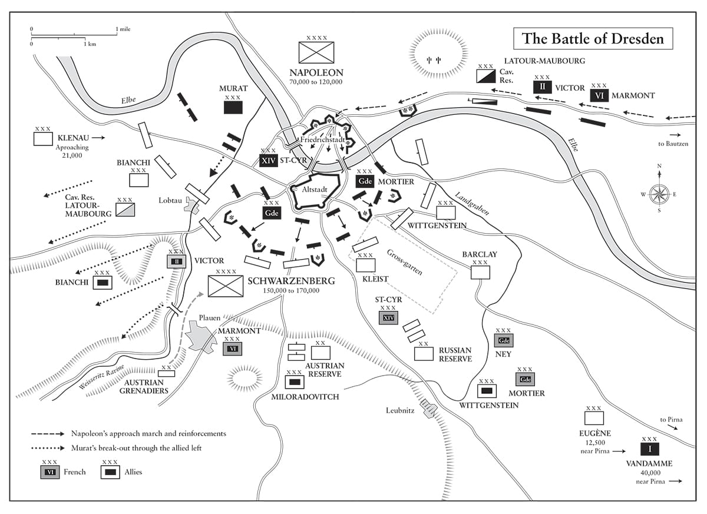
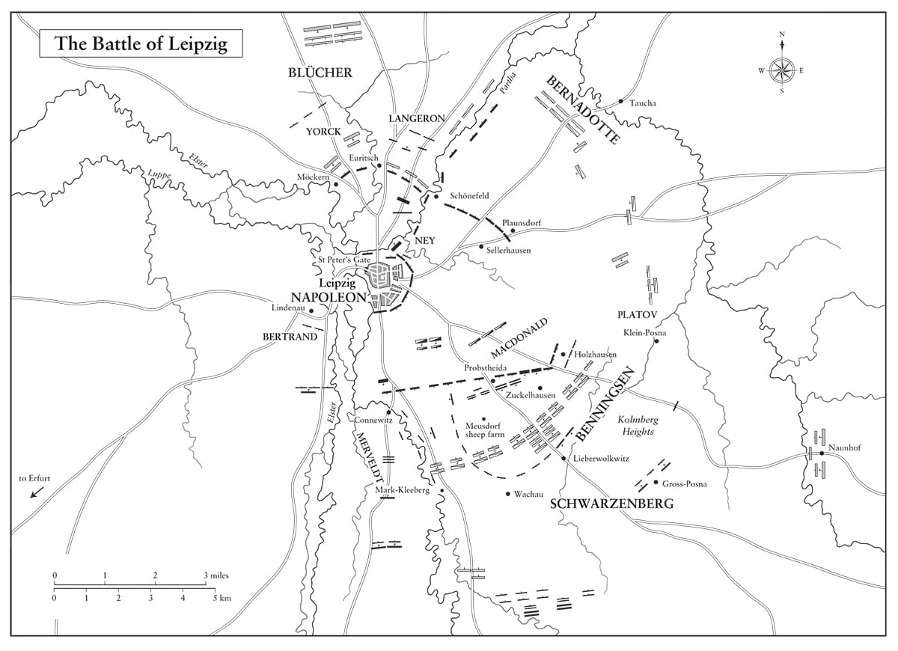

Sự sợ hãi và không chắc chắn sẽ đẩy nhanh sự sụp đổ của các đế chế: chúng tai hại gấp ngàn lần so với những mối nguy hiểm và mất mát của một cuộc chiến không may.
• Napoleon, tuyên bố trên tờ Moniteur, tháng Mười hai năm 1804
Khi hai đạo quân dàn trận, và một phải rút lui qua cầu trong khi đạo quân kia có cả chu vi đường tròn mở ra, thì mọi lợi thế đều nghiêng về đạo quân thứ hai.
• Tôn chỉ quân sự số 25 của Napoleon
⚝ ✽ ⚝
Không còn chút nghi ngờ nào về việc kẻ thù sẽ chấm dứt ngừng bắn vào ngày 10 và giao chiến sẽ bắt đầu trở lại vào ngày 16 hoặc 17”, Napoleon cảnh báo Davout từ Dresden ngày 8 tháng Tám năm 1813. Ông dự đoán Áo khi đó sẽ tung ra 120.000 quân chống lại mình, 30.000 chống lại Bavaria và 50.000 chống lại Eugène ở Italy. Dẫu vậy, ông kết luận: “Cho dù điều này có tăng cường lực lượng cho Đồng minh thêm bao nhiêu đi nữa, ta cảm thấy vẫn có thể đối đầu với chúng”. Các lễ kỷ niệm sinh nhật của ông do đó được đẩy sớm lên năm ngày, vào ngày 10 tháng Tám; đây là các lễ kỷ niệm cuối cùng được chính thức tổ chức trong thời gian ông cai trị Pháp. Đại tá kỵ binh người Saxony, Nam tước Ernst von Odeleben nhớ lại trong hồi ký của mình về cuộc duyệt binh 40.000 người kéo dài hai tiếng, một bản Te Deum được hát tại nhà thờ lớn Dresden giữa tiếng đại bác bắn chào mừng, Cận vệ Đế chế tiệc tùng với Cận vệ Hoàng gia Saxony dưới những tán cây bên bờ sông Elbe, các ban nhạc chơi các bản quân nhạc, mọi binh lính nhận được gấp đôi lương và gấp đôi khẩu phần thịt, và Vua Saxony phân phát hàng nghìn chai rượu vang cho binh lính. Về phần Napoleon, “những tiếng hô ‘muôn năm’ vang rền khi ông ấy phi nước đại qua trước các hàng quân, với toán tùy tùng lộng lẫy đi cùng”. Chẳng mấy ai có thể đoán nổi rằng những pháo thủ Pháp và Saxony đang “chè chén cùng nhau sẽ bắn vào nhau chỉ sau vài tuần nữa. Đến 8 giờ tối, Napoleon tới cung điện của Vua Saxony dự dạ tiệc mừng sinh nhật, sau đó binh sĩ của họ cùng nhau ăn mừng và bắn pháo hoa từ hai bên cầu. “Bầu trời xanh thẳm mang lại hiệu ứng tuyệt vời cho vô vàn những quả pháo hoa”, Odeleben nhớ lại, “chúng đan xen nhau trên đường bay qua phía trên những nóc nhà đen thẫm của thành phố, thắp sáng không trung; thật xa và rộng… Sau một quãng dừng, hình chữ viết tắt tên của Napoleon xuất hiện giữa không trung, phía trên cung điện”. Sau đó, khi đám đông giải tán, có thể nghe thấy “tiếng kêu thê thảm” của một người đánh cá nơi bờ sông; anh ta đã lại quá gần những quả pháo hoa nên đã bị tử thương. “Liệu đó có phải là một điểm báo trước”, Odeleben tự hỏi, “cho sự nghiệp khủng khiếp của người hùng buổi lễ hay không?”
Đến giữa tháng Tám năm 1813, Napoleon đã tập hợp được 43.000 kỵ binh, bố trí rải ra trong bốn quân đoàn và 12 sư đoàn. Chừng đó là hơn nhiều so với những gì ông có khi bắt đầu ngừng bắn, song vẫn chưa đủ để đối phó với các lực lượng được tập hợp chống lại ông. Đồng minh tuyên bố chấm dứt ngừng bắn vào trưa 11, trong vòng 24 tiếng so với ước tính của Napoleon, và tuyên bố giao chiến sẽ bắt đầu lại từ nửa đêm ngày 17.(*) Áo tuyên chiến với Pháp ngày 12. Sự khôn khéo của Metternich trong việc đưa Áo ra khỏi mối liên minh của họ, rồi sang vị thế trung lập, rồi sang vị thế được thể hiện như trung gian khách quan, và rồi vào hôm sau ngày ngừng bắn kết thúc, gia nhập Liên minh Thứ sáu đã được mô tả như “một kiệt tác ngoại giao”. Napoleon chỉ thấy sự lừa gạt. “Hội nghị Prague đã không bao giờ diễn ra nghiêm túc”, ông viết cho Vua Württemberg. “Đó là một cách để Áo lựa chọn tuyên bố lập trường của mình”. Ông viết cho Ney và Marmont, nói rằng ông sẽ chiếm một vị trí giữa Görlitz và Bautzen để quan sát xem người Áo và người Nga sẽ làm gì. “Với ta, dường như chiến dịch hiện tại sẽ không thể mang lại điều gì tốt đẹp, trừ phi trước hết có một trận đánh lớn”, ông kết luận trong sự kìm chế lúc này đã trở nên quen thuộc.
Tình hình chiến lược là nghiêm trọng nhưng chưa đến mức thảm họa. Như ông đã nói, Napoleon có lợi thế về các đường giao thông nội bộ bên trong Saxony, dù ông bị bao quanh bởi các đạo quân lớn của địch từ ba phía. Đạo quân Bohemia của Schwarzenberg giờ đây gồm 230.000 quân Áo, Nga và Phổ, đang tiến tới từ phía bắc Bohemia; Blücher đang chỉ huy Đạo quân Silesia, gồm 85.000 quân Phổ và Nga, tiến về phía tây từ Thượng Silesia, và Bernadotte chỉ huy một Đạo quân phía Bắc gồm 110,000 quân Phổ, Nga và Thụy Điển tiến xuống phía nam từ Brandenburg: tổng cộng gồm 425.000 người, và còn thêm nữa đang trên đường đến. Đối mặt với họ, Napoleon có 351.000 quân rải ra từ Hamburg tới thượng lưu sông Oder. Cho dù ông còn có thêm 93.000 quân nữa đồn trú tại các thành phố Đức và Ba Lan, và 56.000 đang huấn luyện tại các trung tâm huấn luyện của quân đội Pháp, nhưng họ không có sẵn để huy động. Ông sẽ cần phải giữ cho đạo quân của mình tập trung ở trung tâm và đánh bại từng lực lượng địch một cách riêng rẽ, như ông vẫn thường làm trong quá khứ. Thế nhưng thay vì thế, ông đã phạm phải sai lầm nghiêm trọng khi chia tách đạo quân của mình ra – mâu thuẫn với hai trong những tôn chỉ quân sự quan trọng nhất của mình: “Hãy giữ cho lực lượng của anh tập trung” và “Không được lãng phí họ thành những nhóm nhỏ.”
Napoleon đem 250.000 quân chiến đấu với Schwarzenberg, trong khi phái Oudinot (bất chấp sự phản đối của vị thống chế) lên phía bắc để tìm cách chiếm Berlin với 66.000 quân, và Tướng Jean-Baptiste Girard bảo vệ Magdeburg cách Oudinot 128 km về phía tây với 9.000 quân. Ông cũng lệnh cho Davout để lại 10.000 quân để phòng thủ Hamburg và hỗ trợ Oudinot với 25.000 quân nữa. Cũng như trong cuộc tấn công Moscow, Napoleon chối bỏ chiến lược đã phục vụ ông hiệu quả đến thế trong quá khứ – chiến lược chỉ tập trung vào chủ lực địch và tiêu diệt nó – và thay vì thế cho phép những mục tiêu chính trị thứ yếu can dự vào, chẳng hạn như mong muốn chiếm Berlin và trừng phạt Phổ của ông. Ông cũng không đặt Davout dưới quyền chỉ huy của Oudinot hay ngược lại, với kết quả là không hề có sự chỉ huy thống nhất ở chiến trường phía bắc.
Thậm chí Oudinot có thành công trong việc chiếm Berlin, thì điều đó vào năm 1813 cũng không thể đảm bảo cho chiến thắng nhiều hơn so với hồi năm 1806; nếu Schwarzenberg bị các cánh quân Pháp hợp lực đánh bại, thì dù thế nào đi nữa Bernadotte cũng không thể phòng thủ Berlin. Cho dù Napoleon biết chiến dịch sẽ được định đoạt tại Saxony hoặc Bắc Bohemia, nhưng ông đã chỉ giao cho Oudinot một lực lượng yếu ớt để bảo vệ sông Elbe trước Bernadotte và bảo vệ đằng sau ông này. Để Davout lại nhằm đối phó với mối đe dọa không hề tồn tại từ phía tây bắc Đức cũng là sự lãng phí khó tin nổi đối với vị thống chế đã chứng tỏ được tốt nhất năng lực của mình khi chỉ huy độc lập.
Vào ngày 15 tháng Tám, sinh nhật thứ 44 của ông, Napoleon rời Dresden tới Silesia, nơi ông hy vọng tấn công Blücher, người đã chiếm Breslau. Trên đường, ông hội quân với Murat ở Bautzen, và ông này được tưởng thưởng cho cuộc trở lại bất ngờ với Napoleon bằng vị trí chỉ huy chung toàn bộ lực lượng kỵ binh trước đây. Hôm đó, Napoleon viết cho Oudinot, rằng sư đoàn của Girard tại Magdeburg có từ 8.000 đến 9.000 quân, điều này đúng. Ngay hôm sau, ông quả quyết với Macdonald rằng sư đoàn này có 12.000 người.
•••
“Chính ông ấy muốn chiến tranh”, Napoleon viết cho Marie Louise về cha cô, “xuất phát từ tham vọng và lòng tham vô bờ. Các biến cố sẽ quyết định việc này”. Từ đó trở đi, ông nhắc tới Hoàng đế Francis chỉ như là “ton père” (cha em) hay “Papa François” (Ba François), như khi viết vào ngày 17 tháng Tám, “Bị Metternich lừa dối, cha em đã đứng về phía các kẻ thù của ta”. Với vai trò nhiếp chính Pháp và một người vợ tốt, Marie Louise đã trung thành với chồng và đất nước mới của mình, thay vì với cha và tổ quốc của cô.
Triển khai chiến lược Trachenberg của họ như đã đồng ý, lực lượng Đồng minh lùi lại trước mặt lực lượng của Napoleon trong khi tìm kiếm các cánh quân do tướng lĩnh của ông chỉ huy. Như thế, khi Blücher đã sẵn sàng tấn công Ney giữa sông Bober và sông Katzbach ngày 16 tháng Tám, nhưng ông ta lui lại khi Napoleon tiến lên với những lực lượng lớn thuộc đạo quân chủ lực trên chiến trường của ông. Oudinot, bị chậm lại bởi những cơn mưa như trút nước khiến pháo binh của ông ta gần như dậm chân tại chỗ trên đường hành quân tới Berlin, đã bị quân Phổ của Blücher và quân đoàn Thụy Điển của Bá tước Stedingk tấn công trong ba cuộc giao chiến riêng lẻ từ ngày 21 tới ngày 23 tháng Tám ở Gross-Beeren, và bại trận. Ông ta rút về Wittenberg thay vì Luckau như Napoleon mong muốn. “Thật là khó khăn nếu muốn dốt nát hơn Công tước xứ Reggio”, Napoleon nói với Berthier, sau đó ông điều Ney tới thay chức chỉ huy của Oudinot.
Đến 20 tháng Tám, Napoleon đã ở Bohemia, hy vọng ngăn cản bước tiến của Schwarzenberg về phía Prague. “Ta đã đẩy lui Tướng Neipperg”, ông báo cho Marie Louise hôm đó. “Người Nga và Phổ đã vào Bohemia”. (Chỉ một năm sau, Tướng Áo độc nhãn bảnh bao Adam von Neipperg sẽ đáp lại bằng một đòn báo thù cá nhân khủng khiếp.) Nghe tin về một cuộc tấn công lớn của Đạo quân Bohemia vào Dresden, Napoleon vòng đạo quân của mình lại vào ngày 22 và hối hả lui về đó, để lại Macdonald canh chừng Blücher. Trong khi làm vậy, ông viết cho Saint-Cyr: “Nếu kẻ thù đã thực sự tiến hành một cuộc tiến quân lớn về phía Dresden, ta coi đây là một tin rất vui, và điều đó thậm chí sẽ buộc ta phải có một trận đánh lớn trong vòng vài ngày tới, nó sẽ định đoạt mọi thứ tốt đẹp”. Cùng ngày, ông cũng viết cho Chánh thị thần của mình, Bá tước de Montesquiou, bày tỏ sự không hài lòng của mình về những lễ hội kỷ niệm sinh nhật ông tại Paris. “Ta rất không hài lòng khi biết mọi thứ đã được điều hành kém vào ngày 15 tháng Tám, tới mức Hoàng hậu đã bị giữ chân một thời gian đáng kể để nghe âm nhạc tồi”, ông viết, “và kết quả là công chúng đã phải đợi hai tiếng để được xem pháo hoa.”

•••
Trận Dresden diễn ra ngày 26-27 tháng Tám năm 1813. Tình báo của Napoleon đã cảnh báo chính xác về những lực lượng Đồng minh lớn dồn vào thành phố. Đến ngày 19, lực lượng Nga của Barclay de Tolly đã hội quân với Schwarzenberg để tạo thành một đạo quân lớn gồm 237.770 người – gồm 172.000 bộ binh, 43.500 kỵ binh, 7.200 Cossack, và 15.000 pháo thủ – cùng một số lượng pháo đồ sộ gồm 698 khẩu. Đạo quân Bohemia tăng cường này hành quân vào Saxony ngày 21 tháng Tám thành năm cánh. Cánh quân của Wittgenstein gồm 28.000 quân hướng về Dresden. Tuy nhiên, vì Napoleon kiểm soát tất cả các cầu bắc qua sông Elbe, nên quân Pháp có thể hành quân ở cả hai bên bờ sông.
Tại chính Dresden, hệ thống phòng thủ của Thành phố Cũ, trên thực tế là một vòng cung bán nguyệt với hai đầu kết thúc ở bờ sông Elbe, do ba sư đoàn thuộc quân đoàn của Saint-Cyr đảm nhiệm, với khoảng 19.000 bộ binh và 5.300 kỵ binh. Đóng trong thành phô là tám tiểu đoàn đảm nhiệm phòng thủ các tường thành. Napoleon phi nước đại về tới thành phố lúc 10 giờ sáng ngày 26 và tán thành cách bố trí của Saint-Cyr. Bất chấp phải chịu đựng những cơn đau dạ dày gây ói mửa trước trận đánh, ông liên tiếp đưa ra các chỉ thị. Pháo được bố trí tại cả năm cứ điểm lớn nằm bên ngoài tường thành của Thành phố Cũ và tám cứ điểm bên trong Thành phố Mới. Các đường phố và các cổng của Thành phố Cũ bị chặn bằng chướng ngại vật, tất cả cây mọc trong phạm vi 540 m quanh tường thành bị chặt hạ, và một khẩu đội gồm 30 khẩu pháo được bố trí bên bờ phải sông để bắn vào sườn Wittgenstein. Thật may cho những người thực hiện cuộc chuẩn bị này là sự chậm trễ của cánh quân Áo dưới quyền Tướng von Klenau, đồng nghĩa với việc cuộc tổng tấn công phải diễn ra vào hôm sau.
Cho dù Sa hoàng Alexander, Tướng Jean Moreau (người đã rời khỏi cảnh lưu vong ở Anh để chứng kiến cuộc tấn công lớn nhắm vào Napoleon), và Tướng Henri de Jomini (Tham mưu trưởng người Thụy Sĩ của Ney đã trở cờ gia nhập quân Nga trong thời gian ngừng bắn) đều nghĩ rằng vị thế của Napoleon là quá mạnh để tấn công, Vua Phổ Frederick William lập luận rằng nếu không tấn công sẽ gây tổn hại tới tinh thần quân đội, và nhất quyết đề nghị Đồng minh tấn công. Cho dù cả hai phía đã sẵn sàng chiến đấu từ 9:30 sáng, nhưng đã không có gì diễn ra cho tới giữa buổi chiều, khi Napoleon ra lệnh cho Saint-Cyr chiếm lại một nhà máy nằm ngay bên ngoài tường thành. Cuộc xuất quân nhỏ này bị các tư lệnh Đồng minh hiểu nhầm là tín hiệu bắt đấu trận đánh, vậy là trận đánh đã bắt đầu như thế, chủ yếu do tình cờ.
Wittgenstein tham chiến lúc 4 giờ chiều, tiến lên dưới làn đạn pháo dữ dội khi Cận vệ Trẻ đón nhận cuộc tấn công của quân Nga. Năm trung đoàn Jäger (khinh binh tinh nhuệ) và một trung đoàn khinh kỵ tấn công vào Gross-garten, một khu vườn theo phong cách Baroque chính thống nằm ngoài tường thành phố, với bộ binh và pháo binh yểm trợ. Quân Pháp phòng thủ Gross-garten một cách kiên cường, đưa được một khẩu đội pháo qua khu vườn Prinz Anton để bắn vào sườn quân địch. Hai cánh quân Nga tấn công cùng lúc bị hỏa lực pháo bắn ác liệt vào từ bên kia sông Elbe. Đến cuối ngày, mỗi bên giữ một nửa Gross-garten. (Ngày nay có thể có tầm nhìn rất đẹp về chiến trường từ trên mái vòm cao 90 m của Frauenkirche.) Thống chế Ney dẫn đầu một đợt xung phong tại Cứ điểm số 5 với sự tham gia của các đơn vị Cận vệ Trẻ cùng lính thuộc quân đoàn của Saint-Cyr, buộc quân Áo phải đưa thêm lực lượng dự bị vào trận, song kể cả lực lượng này cũng không thể ngăn được sự bao vây của cả một tiểu đoàn quân Hessen và buộc phải đầu hàng. Khi ngày giao chiến đấu tiên kết thúc lúc màn đêm buông xuống, Đồng minh có 4.000 người tử trận và bị thương, gấp đôi phía Pháp.
Napoleon được quân đoàn của Victor đến tăng viện trong đêm. Lực lượng này vận động lên Friedrichstadt trong khi Marmont di chuyển vào trung tâm, và Cận vệ Già vượt sông Elbe tạo thành lực lượng dự bị ở trung tâm. Sử dụng hệ thống quân đoàn một cách hiệu quả, Napoleon lúc này đã tập trung được 155.000 quân cho giao chiến vào hôm sau. Trời đổ mưa suốt đêm và sương mù dày đặc vào sáng 27 tháng Tám. Khi sương mù tan, Napoleon nhận thấy quân Đồng minh bị chia cắt bởi khe sâu Weisseritz, nó cắt rời cánh trái của họ do Bá tước Ignaz Gyulai chỉ huy khỏi trung tâm và cánh phải. Ông quyết định tổ chức một đợt tấn công lớn vào lúc 7 giờ sáng với gần như toàn bộ kỵ binh và hai quân đoàn bộ binh. Murat, khoác trên vai chiếc áo choàng thêu kim tuyến và đội chiếc mũ có cắm một chiếc lông trang trí, có trong tay 68 chi đội kỵ binh và 30 khẩu pháo của Quân đoàn Kỵ binh I sẵn sàng cho cuộc tấn công vào cánh quân của Gyulai, cùng với 36 tiểu đoàn và 68 khẩu pháo của quân đoàn Victor.
Đến 10 giờ sáng, quân Áo đã ở vào tình thế bị áp lực nặng nề bất chấp việc Klenau cuối cùng cũng hội quân được với Đạo quân Bohemia. Quân đoàn của Victor và trọng kỵ binh của Tướng Étienne de Bordessoulle đã đột kích thành công vào đằng sau sườn của họ. Đến 11 giờ, Murat ra lệnh tổng công kích, xung phong lên trong tiếng hô “Hoàng đế muôn năm!” Quanh Lobtau, bộ binh Áo quay lại quyết chiến, với hỏa lực pháo yểm trợ hiệu quả, các đường phố được đặt chướng ngại vật, các ngôi nhà được trổ lỗ chầu mai cho súng hỏa mai. Các toán quấy rối nhỏ của họ bị đẩy lùi, và qua màn sương mù lưa thưa họ trông thấy các đội hình tấn công hàng dọc dày đặc đông đảo của bộ binh dưới quyền Murat đang tiến tới. Dưới hỏa lực pháo dữ dội, quân Pháp tấn công vào khoảng trống giữa các làng và vượt qua chúng, trước khi vòng lại tấn công các làng từ phía sau. Cho dù quân Áo tổ chức phản kích, nhưng đường rút lui của họ vẫn không ngừng bị siết chặt.
Ở trung tâm, quân Áo và quân Phổ đã sẵn sàng từ 4 giờ sáng, chờ đợi tái chiến. Nhiệm vụ của Marmont là kìm chân lực lượng này tại chỗ trong khi hai cánh quân Pháp đánh bại địch. Đến 8 giờ sáng, Saint-Cyr đang tấn công vào lữ đoàn 12 của Phổ trên cao điểm Strehlen, buộc đơn vị này lui lại Leubnitz, tại đây họ hội quân với sư đoàn 3 của Nga. Cuộc giao chiến quyết liệt này chủ yếu là cận chiến bằng lưỡi lê vì mưa nặng hạt đã làm ướt cơ cấu đánh lửa của các khẩu súng hỏa mai bất chấp bộ phận bảo vệ.
Đến 10 giờ sáng, Napoleon đã tập hợp một pháo đội lớn trên cao điểm Strehlen, từ nơi này pháo đội khống chế trung tâm chiến trường. Khi Saint-Cyr dừng lại để củng cố đội hình, ông ta bị bộ binh Áo phản kích. Ông ta cố gắng tiến lên song hỏa lực pháo binh dữ dội của Đồng minh đã chặn đứng ông ta lại. Đến trưa, Napoleon có mặt bên cạnh ông ta và ra lệnh cho ông ta duy trì sức ép, trong khi Cận vệ Trẻ được điều vào Leubnitz để cố gắng đoạt lấy ngôi làng từ bộ binh Silesia. Đến 1 giờ chiều, Napoleon có mặt phía đối diện với cánh phải của Đồng minh, giữa một cuộc đấu pháo dữ dội, nơi ông đích thân chỉ huy một số pháo đội nhẹ cơ động đã đóng vai trò chính làm im lặng nhiều khẩu pháo của Áo. Trong cuộc đấu pháo này, Moreau bị một quả đạn pháo bắn nát cả hai chân. Đến đầu giờ chiều, kỵ binh Phổ bắt đầu di chuyển sang phải. Áp lực Saint-Cyr tạo ra đang từ từ làm dịch chuyển cán cân.
Ở bên cánh trái của Napoleon, Ney bắt đầu tấn công lúc 7:30 sáng. Vì quân Phổ đã bị đẩy bật ra khỏi Gross-garten, ông ta sử dụng khu vườn để che giấu phần nào cuộc tiến quân của mình. Napoleon tới đây lúc 11 giờ và cổ vũ cuộc tấn công hăng hái của những người lính xạ thủ, cho dù thỉnh thoảng họ lại bị kỵ binh Phổ và Nga chặn lại. Bất chấp việc Barclay de Tolly có không dưới 65 chi đội kỵ binh Nga và 20 chi đội kỵ binh Phổ trong tay, nhưng ông ta vẫn không tung họ vào vòng chiến. Trong cơn mưa như trút, đây là một trận chiến của lưỡi lê và kiếm, kèm những tiếng gầm ngắt quãng của đại bác. Schwarzenberg dự định tổ chức một cuộc phản kích lớn, nhưng rồi phát hiện ra tất cả các đơn vị của mình đều đang bị cuốn sâu vào giao chiến, đúng như Napoleon đã dự định.
Đến 2 giờ chiều, Napoleon quay trở lại trung tâm, tập hợp một pháo đội gồm 32 khẩu pháo bắn đạn 12 livre gần Rachnitz để pháo kích trung tâm của Đồng minh. Đến 5:30 chiều, Schwarzenberg nhận được tin Vandamme đã vượt sông Elbe ở Pirna và đang tiến vào sau lưng mình. Giờ đây ông ta không còn lựa chọn nào khác ngoài từ bỏ hoàn toàn cuộc giao chiến. (Vandamme là một viên tướng hung hăng liều lĩnh mà Napoleon nói bất cứ đạo quân nào cũng cần một người, nhưng nếu có hai, ông sẽ buộc phải xử bắn một trong đó.) Đến 6 giờ chiều, quân Pháp đã dừng lại ở vị trí do Đồng minh chiếm lĩnh sáng hôm đó. Cho dù cả hai bên đã mất khoảng 10.000 người, thắng lợi bên cánh phải của Murat đã đưa tới việc bắt được 13.000 quân Áo, và quân Pháp chiếm được 40 khẩu pháo. Khi ông được báo cáo rằng Schwarzenberg bị tử trận trong trận đánh, Napoleon đã thốt lên, “Schwarzenberg đã xóa đi lời nguyền!” Ông hy vọng cái chết của ông ta cuối cùng sẽ xóa bỏ đi bóng ma của màn pháo hoa trong lễ mừng đám cưới của ông năm 1810. Như ông giải thích sau này: “Ta đã vui mừng; không phải vì ta mong ước cái chết của con người tội nghiệp này, mà vì nó cất đi một gánh nặng khỏi trái tim ta”. Chỉ sau đó ông mới phát hiện ra với sự phiền muộn lớn rằng viên tướng bị chết không phải là Schwarzenberg mà là Moreau. “Gã khốn Bonaparte đó luôn gặp may”, Moreau viết cho vợ mình ngay trước khi qua đời vì vết thương vào ngày 2 tháng Chín. “Hãy thứ lỗi cho những dòng nguệch ngoạc của anh. Anh yêu và ôm hôn em với tất cả trái tim”. Vị tướng nổi loạn này thật can đảm khi xin lỗi về chữ viết tay của mình lúc đang hấp hối, song ông ta đã lầm về vận may kỳ lạ của Napoleon.
•••
“Ta vừa giành được một thắng lợi lớn ở Dresden trước các đạo quân Áo, Nga và Phổ do ba vị quân chủ đích thân chỉ huy”, Napoleon viết cho Marie Louise. “Ta đang cưỡi ngựa trên đường truy kích”. Hôm sau, ông tự đính chính lại, viết rằng “Papa François đã sáng suốt khi không đi cùng”. Sau đó ông nói Alexander và Frederick William “đã chiến đấu rất cừ và rút lui một cách vội vã”. Napoleon khắc nghiệt hơn đối với người Áo. “Binh lính của Papa François chưa bao giờ tệ đến thế”, ông viết cho người vợ gốc Áo của mình. “Họ thể hiện một tinh thần chiến đấu thảm hại mọi chỗ. Ta đã bắt được 25.000 tù binh, 30 lá quân kỳ và rất nhiều đại bác”. Trên thực tế thì ngược lại; các quân chủ và tướng lĩnh Đồng minh đã không hoàn thành trách nhiệm với binh sĩ của họ về mặt chiến lược và chiến thuật trong việc bố trí quân, thiếu sự hiệp đồng; chính những người lính dũng cảm, kiên cường đã cứu vãn tình thế để trận đánh kéo dài hai ngày không biến thành, thảm bại.
Cưỡi ngựa băng qua chiến trường trong cơn mưa như trút đã khiến cơn cảm lạnh của Napoleon nặng thêm, và ông bị nôn kèm theo tiêu chảy sau trận đánh. “Ngài cần quay về thay đồ đi”, một người lính kỳ cựu gọi với từ đội ngũ, rồi cuối cùng Hoàng đế cũng quay lại Dresden để tắm nước nóng. Đến 7 giờ tối, ông viết cho Cambacérès, Ta rất mệt mỏi và bận rộn nên ta không thể viết dài được; [Maret] sẽ làm điều đó cho ta. Mọi chuyện đang diễn ra rất tốt tại đây”. Ông không thể cho phép mình ốm lâu. “Ở vị trí của ta”, ông đã viết trong một lời nhắn chung tới các chỉ huy cao cấp của mình chỉ một tuần trước, trong bất cứ kế hoạch nào mà ta không ở trung tâm là không thể chấp nhận được. Bất cứ kế hoạch nào gạt ta ra xa cũng sẽ tạo nên một cuộc chiến tranh chính quy, trong đó ưu thế của kẻ thù về kỵ binh, quân số và thậm chí cả về tướng lĩnh sẽ hoàn toàn hủy hoại ta”. Đây là một sự thừa nhận công khai rằng các thống chế của ông không được trông cậy trong việc tung ra những đòn cần thiết để giành chiến thắng trước lực lượng lớn hơn của họ tới 70% – trên thực tế, trong suy nghĩ của ông, đa số họ thậm chí chỉ tạm đủ năng lực để chỉ huy độc lập.
Đánh giá này được khẳng định phần lớn vào ngày 26 tháng Tám – ngày đầu tiên của trận Dresden – ở vùng Silesia thuộc Phổ bên sông Katzbach (nay là Kaczawa), khi Thống chế Macdonald với 67.000 quân Pháp và Liên minh sông Rhine bị Đạo quân Silesia của Blücher nghiền nát. Trên đảo St Helena, Napoleon tái khẳng định quan điểm của mình; “Macdonald và những người khác như ông ta sẽ ổn khi họ biết mình đang ở đâu và dưới quyền chỉ huy của ta; ngoài ra lại là một chuyện khác”. Ngay hôm sau, quân đoàn của Tướng Girard coi như bị tiêu diệt tại Hagelberg ngày 27 trước lực lượng Landwehr của Phổ, những người mới đổi giáo mác sang súng hỏa mai trước đó chưa lâu, và một số lính Cossack. Lực lượng bị choáng váng và tổn thất nặng nề của Girard phải khó khăn lắm mới trở về được Magdeburg. Ngày 29 tháng Tám, sư đoàn 17 của Tướng Jacques Puthod gồm 3.000 quân bị kẹt bên dòng Bober đang tràn bờ ở Plagwitz, bắn hết đạn và buộc phải đầu hàng toàn bộ. Họ để mất ba con đại bàng, một trong số này được tìm thấy dưới sông sau trận đánh.
Hy vọng chặn đứng cuộc rút lui về Bohemia của Schwarzenberg, Napoleon lệnh cho Vandamme rời Peterswalde với lực lượng 37.000 quân của mình và “xâm nhập vào Bohemia đẩy lui Vương hầu xứ Württemberg”. Mục tiêu là cắt đứt các tuyến đường liên lạc của địch với Tetschen, Aussig, và Teplitz. Nhưng Barclay, Tướng Phổ Kleist, và Constantine cộng lại có quân số đông gấp đôi Vandamme, và cho dù binh lính của ông ta đã chiến đấu dũng cảm, gây tổn thất lớn cho địch, nhưng ông ta đã phải đầu hàng ngày 30 gần làng Kulm với 10.000 binh sĩ dưới quyền. Napoleon đã phái Murat, Saint-Cyr và Marmont tấn công hậu quân Áo ở Töplitz trong khi Vandamme can đảm kìm chân tiến quân Áo, song họ đã không thể cứu được ông ta. Bản thân Napoleon bị ốm và không thể rời khỏi phòng ngủ; thậm chí vào chiều 29 ông chỉ có thể tới được Pirna là xa nhất. Khi Jean-Baptiste Corbineau tới nơi hôm sau đem theo tin thảm họa, Napoleon chỉ có thể nói: “Đó là chiến tranh: thật cao vào buổi sáng và thật thấp vào buổi tối: từ khải hoàn tới thất bại chỉ có một bước chân.”
Đến cuối tháng Tám, mọi lợi thế Napoleon giành được từ chiến thắng của mình tại Dresden đã bị các tướng lĩnh của ông làm tiêu tan hết. Thế nhưng vẫn còn thêm tin xấu nữa đến. Sau khi phái Ney đi để tiếp tục cuộc tấn công Berlin nhằm xoay chuyển tình hình sau thất bại của Oudinot trước Bernadotte, ngày 6 tháng Chín cả Ney và Oudinot bị Tướng von Bulow đánh bại trong trận Dennewitz ở Brandenburg. Sau đó Bavaria tuyên bố trung lập khiến các nhà nước Đức khác phải cân nhắc về vị thế của mình, nhất là sau khi phía Đồng minh đã tuyên bố bãi bỏ Liên bang sông Rhine vào cuối tháng.
Napoleon trải qua phần lớn tháng Chín ở Dresden, thỉnh thoảng xuất kích để giao chiến với lực lượng Đồng minh nào tới quá gần, song không thể thực hiện được đòn tấn công lớn nào có thể giành chiến thắng cho cả chiến dịch vì Đồng minh quyết tâm né tránh giao chiến với ông, trong khi họ tiếp tục tập trung tấn công vào các tướng lĩnh của ông. Đây là những tuần đầy thất vọng cho ông, thỉnh thoảng sự sốt ruột và mất bình tĩnh của ông lại lộ ra. Khi 2.000 quân của Tướng Samuel-François l’Héritier de Chézelles thuộc Quân đoàn kỵ binh 5 bị 600 lính Cossack tấn công khi đang ở vùng Dresden và Torgau, ông viết cho Berthier rằng người của Chézelles đáng ra phải chiến đấu với địch dũng mãnh hơn, cho dù họ “không có cả kiếm lẫn súng ngắn, và chỉ được trang bị bằng cán chổi.”
Kiểu giao chiến này không tốt cho tinh thần, và vào ngày 27 tháng Chín cả một tiểu đoàn Saxony đào ngũ sang phía Bernadotte, người mà họ đã chiến đấu dưới quyền tại Wagram. Tại Paris, Marie Louise đưa ra một sắc lệnh gọi quân dịch thêm 280.000 người, trong đó không ít 160.000 là gọi sớm của năm 1815, còn năm 1814 vốn đã bị gọi quân dịch từ trước. Tuy nhiên, sự chống đối việc gọi quân dịch bổ sung đã lan rộng trên những vùng lãnh thổ rộng lớn của Pháp.
Tướng Thiébault, một chỉ huy sư đoàn trong chiến dịch, đã tóm lược chính xác tình hình vào mùa thu năm 1813:
⚝ ✽ ⚝
Đến đầu tháng Mười, lực lượng Đồng minh có thể di chuyển cắt ngang các tuyến đường liên lạc của Pháp tùy ý, và có những ngày Napoleon không thể gửi hay nhận thư. Tình hình xấu đi đáng kể vào ngày 6 tháng Mười, khi Bavaria tuyên chiến với Pháp. “Bavaria sẽ không ra quân tấn công chúng ta một cách nghiêm túc”. một Hoàng đế đầy triết lý viết cho Fain, “nước này sẽ mất quá nhiều với sự thắng lợi trọn vẹn của Áo và thảm họa của Pháp. Họ biết rõ một nước là kẻ thù tự nhiên của mình, và nước kia là sự ủng hộ cần đến”. Hôm sau, Wellington vượt sông Bidasoa ra khỏi Tây Ban Nha, trở thành đạo quân nước ngoài đầu tiên tiến vào Pháp kể từ khi Đô đốc Hood rời khỏi Toulon 20 năm trước. Với Blücher và 64.000 quân đang vượt sông Elbe, Đạo quân Bohemia 200.000 người đang hành quân về Leipzig, Napoleon để Saint-Cyr lại Dresden và hướng tới phía bắc với 120.000 quân, hy vọng đánh bật Blücher sang bên kia sông Elbe, sau đó quay lại chiến đấu với Schwarzenberg trong khi vẫn luôn tạo ra một mối đe dọa thật sự với Berlin.
Đến ngày 10 tháng Mười, ba đạo quân Đồng minh dưới quyền Schwarzenberg, Blücher và Bernadotte, tổng cộng 325.000 quân, đều dồn về Leipzig, hy vọng đưa đạo quân nhỏ hơn nhiều của Napoleon vào bẫy tại đó. “Sẽ không tránh khỏi một trận đánh lớn tại Leipzig”, Napoleon viết cho Ney lúc 5 giờ sáng 13 tháng Mười, cùng ngày ông được biết một đạo quân Bavaria đã hội quân với người Áo và lúc này đang đe dọa sông Rhine. Bất chấp việc bị áp đảo mạnh về quân số (ông có thể tập hợp được hơn 200.000 quân một chút), Napoleon quyết định chiến đấu vì thành phố mà nhà báo Anh Frederich Shoberl đã mô tả vào năm sau là “Không nghi ngờ gì, đây chính là thành phố thương mại số một của Đức, và là trung tâm giao dịch lớn của lục địa”. Ông sắp xếp lính của mình thành hàng hai thay vì hàng ba, sau khi bác sĩ Larrey thuyết phục ông rằng nhiều vết thương trên đầu mà ông trông thấy không phải là bị thương như Napoleon đã nghi ngờ, mà là kết quả của việc binh lính nạp đạn và bắn súng hỏa mai của họ ở gần đầu của các đồng đội quỳ xuống trong các hàng phía trước họ. “Một trong những lợi thế của cách bố trí mới này”, Napoleon nói, “là sẽ khiến kẻ thù tin rằng quân ta đông hơn một phần ba so với trên thực tế.”
Ngày 14 tháng Mười, khi Cận vệ Đế chế từ Düben tới nơi, Napoleon qua đêm tại nhà của một ông Wester nào đó ở khu ngoại ô phía đông Reudnitz của Leipzig. Như thường lệ, sĩ quan hậu cần đã dùng phấn viết tên các tướng lĩnh lên cửa phòng của mỗi người, và một lò sưởi lập tức được nhóm lên trong phòng của Napoleon, “vì Hoàng thượng rất thích ấm”. Sau đó, Hoàng đế trò chuyện với viên tổng quản của Wester.
Napoleon: “Chủ của anh làm gì?”
Quản lý: “Ông ấy kinh doanh, tâu bệ hạ.”
Napoleon: “Kinh doanh gì?”
Quản lý: “Ông ấy là chủ ngân hàng.”
Napoleon: (mỉm cười) “À há! Vậy thì ông ta đáng giá chục vạn đấy nhỉ.”
Quản lý: “Mong bệ hạ thứ lỗi, kỳ thực là không ạ.”
Napoleon: “À, nếu thế thì có lẽ ông ta đáng giá hai chục vạn chăng?”
⚝ ✽ ⚝
Họ trò chuyện về các trái phiếu khấu trừ, tỉ lệ lãi suất, lương của các nhân viên, tình trạng hiện tại (tồi tệ) của việc làm ăn, và gia đình người chủ. “Trong suốt cuộc trò chuyện Hoàng đế rất vui vẻ, thường xuyên mỉm cười, và hít rất nhiều thuốc lá bột”, Đại tá von Odeleben nhớ lại. Khi rời đi, ông trả 200 franc cho niềm vui được ở lại đó, điều mà như một sĩ quan phụ tá của ông ghi nhận, “chắc chắn không phải là thói quen thông thường.”
Hôm sau, 200.000 quân của Schwarzenberg chạm trán với Murat ở phía nam, mất cả ngày cho các cuộc tuần tra và giao chiến nhỏ lẻ, trong khi Blücher tiến dọc theo các sông Saale và Elster. Cưỡi một con ngựa cái màu kem hôm đó, Napoleon trao đại bàng và quân kỳ cho ba tiểu đoàn. Tiếng trống vang lên khi mỗi lá quân kỳ được lấy khỏi hộp và mở ra để trao cho các sĩ quan. “Trong một giai điệu trang nghiêm rõ ràng, nhưng không quá to, có thể được phân biệt bằng khái niệm âm nhạc mezza voce ”,(*) một người chứng kiến nhớ lại Napoleon đã nói:
⚝ ✽ ⚝
Nghi lễ này vốn dĩ có quân nhạc đi kèm, nhưng lúc này thì không: “Nhạc công đã trở nên hiếm hoi, vì phần lớn họ đã vùi xác dưới tuyết ở Nga.”
•••
Trong số nửa triệu người chiến đấu tại Leipzig trong “Trận đánh của Các Dân tộc” – trận đánh lớn nhất trong lịch sử châu Âu cho tới thời điểm đó – có người Pháp, Đức (ở cả hai phía), Nga, Thụy Điển, Italy, Ba Lan, tất cả các dân tộc thuộc Đế chế Áo, và thậm chí cả một đơn vị hỏa tiễn của Anh. Trận đánh diễn ra trong ba ngày, vào các ngày 16, 18, và 19 tháng Mười năm 1813. Napoleon có gần như toàn bộ lực lượng tác chiến Pháp dưới quyền chỉ huy của mình, gồm 203.100 người, trong đó chỉ có 28.000 kỵ binh, và 738 khẩu pháo. Vắng mặt gồm có quân đoàn của Saint-Cyr ở Dresden (30.000 người), quân đoàn của Rapp đang bị vây tại Danzig (36.000), quân đoàn của Davout tại Hamburg (40.000) và khoảng 90.000 đang ở trong bệnh viện. Tổng cộng, cho tới ngày cuối cùng của trận đánh, phía Đồng minh đã có thể huy động được tổng số tới 362.000 quân và 1.456 khẩu pháo, nhiều gần gấp đôi phía Pháp. Chiến trường mênh mông bị cắt làm đôi bởi các sông Elster và Pleisse, với các vùng đất bằng phẳng trống trải về phía đông và những ngọn đồi cung cấp vị trí đặt pháo và che khuất binh lính đằng sau chúng.(*)
Đại úy Adolphe de Gauville, từng bị thương tại Leipzig, nhớ lại rằng vào buổi sáng tối tăm, ảm đạm và mưa dầm của ngày 16 tháng Mười, “lúc 5 giờ sáng, Napoleon cho mang chiếc ghế bành và cái bàn ra cho ông ấy ở một cánh đồng. Ông ấy có rất nhiều bản đồ. Ông ấy ra lệnh cho một số đông sĩ quan và tướng lĩnh, họ lần lượt tới để nhận lệnh”. Napoleon tính toán rằng ông có thể tung ra 138.000 quân để đánh lực lượng 100.000 quân của Schwarzenberg ở phía nam thành phố, và biết ông có một hay tối đa là hai ngày để đánh bại ông ta trước khi Blücher, Bernadotte và Bennigsen tới nơi lần lượt từ phía tây bắc, bắc, và đông. (Tiền quân của Bennigsen – lính Cossack – tới chiến trường vào ngày giao chiến đầu tiên, và quân chủ lực vào cuối ngày 17, sẵn sàng tham chiến vào hôm sau. Đến khi đó Bernadotte cũng tới nơi.)
Trận đánh bắt đầu sớm vào ngày 16 khi quân Phổ chiếm làng Mark-Kleeberg từ tay quân Ba Lan của Poniatowski trong cuộc giao chiến dữ dội trên đường, bị lòng hận thù sắc tộc làm cho thêm ác liệt. Wachau được phòng thủ tương đối mỏng nên nhanh chóng rơi vào tay quân Nga được một lữ đoàn Phổ yểm trợ, song mọi nỗ lực tiến xa hơn đều bị pháo binh Pháp chặn đứng. Khi Napoleon tới đó vào khoảng từ giữa trưa tới 1 giờ chiều, ông tập hợp một pháo đội 177 khẩu, và dưới làn đạn pháo kích dữ dội của pháo đội này, ông tung ra một cuộc phản công lớn, buộc quân Nga phải lui về đồng bằng Leipzig, nơi không có gì che chắn và đạn chùm đã hạ gục họ khá nhiều.
Tướng Áo Ignaz Gyulai uy hiếp đường rút lui duy nhất về phía tây của Napoleon – nếu như nó trở nên cần thiết – vì thế quân đoàn của Tướng Henri Bertrand được tách ra để bảo vệ con đường, làm cuộc tấn công chính của Napoleon bị yếu đi đáng kể. Gyulai trở nên tập trung vào việc chiếm Lindenau nằm gần con đường, và một cuộc khủng hoảng thực sự đã xảy ra vào cuối buổi chiều khi quân Áo, bất chấp pháo bắn mạnh, tấn công vào ngôi làng đang bốc cháy. Bertrand lùi lại và củng cố đội hình trước khi phản kích lúc 5 giờ chiều. Ông ta đã mở thông được hoàn toàn con đường, song Gyulai đã có một đóng góp quan trọng khi kìm được chân quân đoàn của Bertrand.
Lúc 10 giờ sáng, Klenau tấn công vào Liebertwolkwitz, nơi này nhanh chóng bị chiếm trừ nhà thờ và đầu phía bắc ngôi làng. Một cuộc phản công mau lẹ lại đẩy lùi quân Áo ra ngoài. Tướng Gérard bị thương khi dẫn đầu sư đoàn mà phần lớn là quân Italy của mình tấn công Klein-Posna, trước khi Mortier đưa các sư đoàn Cận vệ Trẻ của mình lên để chiếm giữ khu vực này. Đến 11 giờ, Đồng minh đã bị đẩy lui về vị trí xuất phát của họ, kiệt sức và không còn lực lượng dự bị. Ngạc nhiên trước cuộc tấn công của họ, Napoleon đã buộc phải đưa lực lượng dự bị của mình vào vòng chiến sớm hơn ông muốn. Cận vệ Già của Friant chiếm được trại cừu Meusdorf, và hai sư đoàn Cận vệ Trẻ dưới quyền Oudinot cùng số đông kỵ binh dự bị tập trung lại đằng sau Wachau.
Khi sương mù tan đi trên khắp chiến trường, Napoleon có thể đánh giá ưu thế rõ ràng của mình. Nhìn thấy một cơ hội để chia cắt chiến tuyến Đồng minh tại điểm yếu nhất của nó ở Wachau, ông tung quân đoàn của Macdonald ra đánh vào sau cánh phải Đồng minh lúc giữa trưa. Đến khoảng 2 giờ chiều, ông đích thân cổ vũ Trung đoàn khinh binh 22 tấn công cao điểm khống chế Gross-Posna, tên là Kolmberg, đùa bỡn khi chế nhạo rằng họ chỉ đang đứng khoanh tay nơi chân đồi dưới làn đạn bắn dữ dội. Cho dù họ chiếm được cao điểm, nhưng động thái của họ đã bị Alexander, Frederick William, Schwarzenberg nhận ra, và các chỉ huy Đồng minh liền tung lực lượng dự bị Phổ vào để chặn họ lại. (Cũng như trước đấy trong chiến dịch, hai vị quân chủ giờ đây chỉ ở đó trong vai trò cố vấn và khích lệ tinh thần, còn những quyết định quân sự do các quân nhân chuyên nghiệp đưa ra.)
Ngoài khu vực đất bằng, Murat tập trung kỵ binh lại giữa Wachau và Liebertwolkwitz thành các đội hình hàng dọc dày đặc để yểm trợ cho Oudinot và Poniatowski. Đến 2:30 chiều, kỵ binh của Bordessoulle dẫn đầu cuộc xung phong ở trung tâm, đột phá qua bộ binh của Vương hầu xứ Württemberg và xông vào giữa các pháo thủ thuộc pháo đội chủ lực của Đồng minh. 18 chi đội kỵ binh, gồm tổng cộng 2.300 tay kiếm, tấn công sư đoàn Kỵ binh Cận vệ Nga và đẩy lùi nó, rồi xông thẳng về phía bản doanh Đồng minh. Nhưng bộ binh Pháp đã không thể bám theo đợt xung phong này, và sau khi lực lượng của Bordessoulle bị mặt đất lầy lội làm chậm lại, họ đã phải rút lui và chịu tổn thất lớn khi quay về, kể cả bởi hỏa lực của quân nhà.
Napoleon đang chờ đợi Marmont tới từ phía bắc, song đến 3 giờ chiều ông quyết định tung ra đợt tổng tấn công với lực lượng mình có trong tay. Ông đẩy pháo binh lên phía trước để pháo kích vào trung tâm quân địch, tung ra những đợt xung phong bằng kỵ binh và phản kích liên tục, lệnh cho bộ binh nổ súng ở cự ly gần và khiến chiến tuyến Đồng minh gần như sụp đổ, nhưng một số đơn vị mới của Áo đã lội qua sông Pleisse trong nước ngập tới hông để vào trận nhanh hơn, cùng sự chống trả kiên cường của các đơn vị Nga và Phổ, đã ngăn không cho quân Pháp đột phá được.
Nghe thấy tiếng đại bác nổ liên hồi từ hướng Möckern, Napoleon phi nước đại tới phía bắc chiến trường, nơi Blücher đã giao chiến với Marmont. Trận chiến giáp lá cà dữ dội diễn ra trên các con đường hẹp của Möckern, và khi Marmont cố gắng chiếm lĩnh cao điểm sau làng Yorck liền tung ra một đợt xung phong kỵ binh có bộ binh yểm trợ. Quân của Marmont bị đẩy lùi vào bên trong Leipzig. Ney cũng đang lùi dần về phía thành phố, từ bỏ hết cứ điểm này tới cứ điểm khác thay vì kìm hãm bước tiến của Blücher và Bernadotte.
Với quân Đồng minh tiến vào gần từ ba phía, Napoleon buộc phải rải các cuộc tấn công của Pháp ra quá mỏng để có thể đạt được kết quả quyết định ở bất cứ điểm nào. Đến 5 giờ chiều, cả hai bên đã sẵn sàng kết thúc ngày giao chiến đầu tiên. Thương vong rất lớn, lên tới khoảng 25.000 quân Pháp và 30.000 quân Đồng minh. Tối đó, đáng lẽ ông phải rút đi theo tuyến đường dẫn về phía tây, thoát ra khỏi bẫy trước khi Schwarzenberg nhận được tăng viện hùng hậu. Song thay vì thế, ông cho phép cả ngày 17 tháng Mười trôi qua trong nghỉ ngơi và củng cố, đề nghị một sự ngừng bắn (nhưng bị từ chối) và phái viên tướng Áo cao cấp bị bắt hôm trước, Maximilian von Merveldt, tới gặp Hoàng đế Francis với một thông điệp bài Nga cộc cằn.

“Sẽ chẳng có gì là quá quắt nếu Áo, Pháp và kể cả Phổ để chặn lại trên sông Vistula dòng thác lũ của một tộc người nửa du mục mà về căn bản là xâm lăng, với một đế quốc trải dài từ đây tới tận Trung Hoa”, ông viết, và thêm “Ta rốt cuộc sẽ phải chấp nhận những hy sinh: ta biết điều đó; ta sẵn sàng thực hiện điều đó”. Những hy sinh ông nói với Fain bao gồm các việc ông sẵn sàng thực hiện để có hòa bình như lập tức từ bỏ Đại công quốc Warsaw, Illyria, và Liên bang sông Rhine. Ông cũng sẵn sàng xem xét độc lập cho Tây Ban Nha, Hà Lan, và các thành phố thuộc Liên minh Hansa, cho dù đó có thể chỉ là một phần của một hiệp ước toàn diện cũng bao gồm cả Anh. Với Italy, ông muốn “toàn vẹn và độc lập cho Vương quốc”, điều nghe có vẻ mơ hồ, không giống như đề xuất thực sự của ông với Áo về việc triệt thoái khỏi Đức và rút lui về sau sông Rhine. Francis không trả lời đề nghị này trong ba tuần, đến lúc đó tình hình đã thay đổi một cách hoàn toàn theo hướng bất lợi cho Napoleon.
Wellington sau này nói rằng nếu Napoleon rút lui khỏi Leipzig sớm hơn, Đồng minh đã không thể dám tới gần sông Rhine. Nhưng rút lui khỏi Leipzig mà không có thỏa thuận ngừng bắn cũng sẽ đồng nghĩa với việc bỏ rơi hàng chục ngàn lính đồn trú trong các pháo đài phía đông. Napoleon lo rằng người Saxony và Württemberg khi đó sẽ rời bỏ ông hệt như người Bavaria đã làm. Vì thế, thay vì rút lui về Erfurt, ông tổ chức cung cấp đạn – pháo binh Pháp bắn 220.000 quả đạn trong trận đánh, thậm chí gấp ba lần tại Wagram – và tập trung toàn bộ đạo quân của mình trong một vành đai bán nguyệt ở phía đông bắc và phía nam thành phố, trong khi điều Bertrand và Mortier đi trấn giữ các đường rút lui nếu cần đến chúng. Ông bị cúm nặng vào tối 17, nhưng đã cố gắng vượt qua nó. Tuy nhiên, việc các sư đoàn của Bernadotte và Bennigsen tới nơi đồng nghĩa với việc Schwarzenberg được tăng cường hơn 100.000 người, trong khi Napoleon được tăng viện thêm 14.000 người từ quân đoàn của Reynier lúc đầu trận đánh.
Sau khi cưỡi ngựa ra ngoài về phía Lindenau lúc khoảng 8 giờ sáng ngày 18 tháng Mười, Napoleon dành hầu hết ngày hôm đó tại cối xay thuốc lá ở Thonberg, nơi Cận vệ Già và Kỵ binh Cận vệ được giữ làm dự bị.(*) Đến lúc đó, Mặt trời đã lên và các đạo quân đã sẵn sàng giao chiến. Khi trận đánh tiếp tục trở lại, Schwarzenberg tổ chức sáu cuộc tấn công lớn vào cùng một chỗ, sử dụng 295.000 quân và 1.360 khẩu pháo. Ông ta hy vọng chiếm được Connewitz, Mark-Kleeberg, Probstheida, Zuckelhausen, Holzhausen, Lindenau, và Taucha trước khi nghiền nát quân đội Pháp tại ngay Leipzig.
Khi Bennigsen tới vào cuối buổi sáng, ông ta chiếm được Holzhausen và các làng lân cận từ tay Macdonald. Ở bên trái Macdonald là lực lượng tăng viện của Reynier, gồm 5.400 quân Saxony và 700 quân Württemberg, song đến 9 giờ sáng, lực lượng vừa tới này đột nhiên trở cờ quay sang phía Đồng minh cùng 38 khẩu pháo, để lại một khoảng trống mở ra trên chiến tuyến của Napoleon mà sư đoàn trọng kỵ binh của Tướng Jean Defrance cố gắng trám vào. Các pháo đội Saxony đã quay ngược lại theo đúng nghĩa đen, tháo càng kéo và bắt đầu bắn vào chiến tuyến Pháp. Họ đã chiến đấu cho Napoleon trong bảy năm kể từ khi bỏ rơi người Phổ sau Jena, và một sự phản bội lạnh lùng như thế gây tác động xấu tới tinh thần quân Pháp.
Von Bülow nhanh chóng chiếm được làng Paunsdorf. Napoleon tung các đơn vị thuộc Cận vệ Già và Cận vệ Trẻ ra để chiếm lại, song ưu thế số lượng của quân Phổ buộc ngay cả các đơn vị tinh nhuệ này cũng phải lùi ra. Probstheida, do Victor và Lauriston phòng thủ, trở thành một pháo đài bất khả xâm phạm thực sự trong cả ngày hôm đó, bất chấp việc Sa hoàng đã đích thân quan tâm sát sao tới việc chiếm lấy nó. Hai lữ đoàn Phổ đã ba lần thử sức không thành công, và Sư đoàn bộ binh 3 của Nga đã phải cay cú lùi lại sau tấm bình phong che chắn của khinh binh. Napoleon rất lo lắng tới sức mạnh của những đợt tấn công này, đến mức ông điều Sư đoàn Cận vệ Già của Curial lên hỗ trợ, song thật may đã không phải cần tới họ.
Ở phía bắc Leipzig, một trận chiến bùng lên dữ dội để giành quyền kiểm soát Shönefeld giữa Marmont và Langeron, một viên tướng Pháp lưu vong chiến đấu trong quân đội Nga. Bằng cách điều tất cả pháo thuộc quân đoàn của Souham lên bổ sung cho mình, Marmont đã dùng 137 khẩu để đấu thành công với 180 khẩu của Langeron. Mặt đất giữa hai pháo đội lớn này bị quét sạch: sáu tướng Pháp tử trận hoặc bị thương trong trận pháo kích diễn ra cho tới khi đêm xuống, lúc này Marmont rút về các công sự của mình ở ngoại ô Leipzig. Ney tung hai sư đoàn ra phản kích, giành giật làng Sellerhausen. Trong trận đánh này người Anh đã bắn những quả hỏa tiễn Congreve ầm ĩ và có sức hủy diệt lớn của họ với hiệu quả rất mạnh, áp đảo tinh thần quân Pháp. Cho dù hỏa tiễn đã được biết đến từ khoảng 16 năm trước, và hiệu quả của nó đã được chứng tỏ tại Copenhaghen năm 1807, nhưng Napoleon đã không phát triển khả năng sử dụng hỏa tiễn cho mình.
Napoleon đích thân dẫn đầu một số đơn vị Cận vệ Già và kỵ binh Cận vệ phản kích tại Zwei-Naundorf vào khoảng 4:30, và chỉ tránh qua một bên vào phút cuối cùng khi họ xung trận. Nhưng quân Đồng minh đã chặn lực lượng này chững lại, một dòng thác quân Nga và Phổ đẩy quân Pháp lùi dần. “Tại đây, tôi thấy Hoàng đế đứng dưới một luồng đạn chùm của địch”, Johann Röhrig, một đội nhất thuộc lực lượng xạ thủ Pháp, nhớ lại. “Khuôn mặt ông ấy tái nhợt và lạnh như cẩm thạch. Chỉ thỉnh thoảng một biểu cảm phẫn nộ thoáng qua trên khuôn mặt ông ấy. Ông ấy thấy thế là đã mất tất cả. Chúng tôi chỉ đang chiến đấu để rút lui”. Sau khi phải trả 2 crown (tức 6 franc hay ba ngày lương) cho tám củ khoai tây từ mấy người lính thủ pháo Cận vệ Già, Röhrig viết về hôm đó:
⚝ ✽ ⚝
Mỗi bên đã mất khoảng 25.000 người trong những cuộc pháo kích và cận chiến ác liệt ngày hôm đó.
•••
Vào sáng ngày 19 tháng Mười, Napoleon cuối cùng cũng quyết định quân đội cần rút lui. Ông nói với Poniatowski, người được ông trao gậy thống chế ba ngày trước đó. “Hoàng thân, ông sẽ phòng thủ khu vực ngoại ô phía nam”. “Tâu bệ hạ, thần có rất ít người”, vị tân thống chế người Ba Lan đáp. “Được, ông sẽ phòng thủ với những gì ông có!” Napoleon nói. “Vâng! Tâu bệ hạ”, ông ta trả lời, “chúng thần sẽ giữ vững! Tất cả chúng thần sẵn sàng chết vì bệ hạ”. Sau đó trong cùng ngày, ông ta đã thực hiện đúng như lời mình nói. Napoleon rời thành phố lúc khoảng 10 giờ sáng, sau khi tới thăm vua Saxony, người có vị chỉ huy trên chiến trường đã không trở cờ chạy sang phía Đồng minh như nhiều thuộc cấp của ông ta. “Thái độ của Napoleon có vẻ điềm tĩnh khi ông ấy rời Leipzig”, Đại tá von Odeleben nhớ lại, “và thong thả cưỡi ngựa qua cổng St Peter, song cả người ông ấy đầm đìa mồ hôi, một tình trạng có thể xuất phát từ nỗ lực quá sức cộng với sự bất an về tinh thần”. Cuộc rút lui diễn ra hỗn loạn, với “Các xe đạn, cảnh binh, pháo binh, bò sữa và cừu, phụ nữ, lính thủ pháo, xe trạm, người lành, thương binh, những người hấp hối, tất cả chen chúc nhau, xô đẩy trong sự hỗn loạn tới mức khó có thể hy vọng rằng người Pháp có thể tiếp tục cuộc hành quân của họ, chưa nói gì đến chuyện có khả năng tự vệ”. Tình trạng hỗn loạn trở nên tồi tệ hơn nhiều khi cuộc tấn công vào thành phố của Đồng minh bắt đầu lúc 10:30 sáng.
Cầu phao đã không được bắc qua các sông Pleisse, Luppe hay Elster, vì thế mọi người phải dùng cây cầu duy nhất bắc qua sông Pleisse trong thành phố, nằm ở cuối một dãy những con phố hẹp. Thảm họa xảy ra khi cầu bị phá nổ lúc 11:30, từ lâu trước khi toàn bộ đạo quân kịp đi qua, dẫn tới việc hơn 20.000 người bị bắt một cách không đáng và biến cuộc rút lui thành một cuộc tháo chạy. Bản thông cáo số 50 của Napoleon đã buộc tội đích danh Đại tá Montfort vì đã ủy thác nhiệm vụ cho một “hạ sĩ, một kẻ dốt nát không hiểu gì về bản chất của nhiệm vụ mà anh ta được giao”. Khi người và vật còn đang ở trên cầu thì vụ nổ xảy ra làm chấn động cả thành phố, những mảnh thi thể người và ngựa rơi như mưa xuống các con phố và xuống sông. Một số sĩ quan quyết định tìm cách bơi qua sông để tránh bị bắt. Macdonald làm được điều đó, song con ngựa của Poniatowski mà ông ta cưỡi lao xuống sông đã không thể leo lên được bờ sông đối diện và ngã đè lên ông ta. Cả người lẫn ngựa bị dòng nước cuốn trôi. Người ngư dân đã vớt xác Poniatowski từ dưới sông lên kiếm được khá tiền từ việc bán đôi cầu vai cẩn kim cương, những chiếc nhẫn và hộp thuốc lá của ông ta cho các sĩ quan Ba Lan muốn mang chúng về trao lại cho gia đình ông ta. Chiếc cặp bằng da màu đỏ của Napoleon dùng để đựng báo nước ngoài, có ghi các chữ mạ vàng Gazettes Étrangères (Báo chí nước ngoài) bị chiếm mất cùng với cỗ xe của ông, và bị mở ra trước sự chứng kiến của Bernadotte.(*)
Giữa một trận thua và một trận thắng”, Napoleon nói vào trước trận Leipzig, “khoảng cách thật mênh mông và ở đó là những đế chế”. Kể cả tử trận và bị thương, Napoleon mất khoảng 47.000 người trong ba ngày. Khoảng 38.000 người bị bắt, cùng 325 khẩu pháo, 900 cỗ xe, 28 lá quân kỳ cùng quân hiệu (kể cả ba con đại bàng), khiến cho đây rõ ràng là thất bại nặng nề nhất theo thống kê trong sự nghiệp của ông. Trong bản thông cáo của mình, ông thừa nhận bị mất 12.000 người, vài trăm chiếc xe, chủ yếu là do kết quả của việc cây cầu bị phá nổ. “Sự hỗn loạn mà nó gây ra cho đạo quân đã làm thay đổi tình hình”, ông viết; “đạo quân Pháp chiến thắng đã tới Erfurt như một đạo quân bại trận”. Cộng thêm cả những thiệt hại do đào ngũ và phản bội sau đó khiến ông chỉ có thể đưa được 80.000 người thuộc Đại quân trở về qua sông Saale trong số hơn 200.000 quân ông có khi trận đánh bắt đầu. “Bệnh sốt chấy rận bùng phát trong hàng ngũ vô tổ chức của chúng ta một cách kinh hoàng”, Đại úy Barrès nhớ lại. “Theo đó có thể nói khi rời khỏi Leipzig, chúng ta đã phải đồng hành với mọi dịch bệnh có thể nuốt chửng một đạo quân.
Napoleon đã tiến hành một trận đánh để rút lui về sông Rhine, đánh dạt sang một bên quân Áo tại Kösen vào ngày 21, quân Phổ tại Freiburg vào cùng ngày, quân Nga tại Hörselberg vào ngày 27, và quân Bavaria tại Hanau trong một trận đánh kéo dài hai ngày 30 và 31. Ông vượt trở lại qua sông Rhine tại Mainz ngày 2 tháng Mười một. “Hãy bình tĩnh, vui vẻ và cười vào mặt những kẻ gieo rắc sự sợ hãi”, ông viết cho vợ hôm sau.
Napoleon vẫn còn 120.000 người bị vây hãm trong các pháo đài trên sông Elbe, Oder và Vistula, với Rapp vẫn ở Danzig (tại đây lực lượng 40.000 người của ông ta cuối cùng giảm xuống chỉ còn 10.000 người), và các Tướng Adrien du Taillis ở Torgau, Jean Lemarois ở Magdeburg, Jean Lapoype ở Wittenberg, Louis Grandeau ở Stettin, Louis d’Albe ở Küstrin, Jean de Laplane ở Glogau, cũng như còn thêm các đơn vị khác ở Dresden, Erfurt, Marienburg, Modlin, Zamość, Wesel. Cho dù Davout giữ vững Hamburg và hạ lưu sông Elbe, nhưng phần lớn các pháo đài phía đông này lần lượt thất thủ vào cuối năm 1813, thường là do cái đói. Một số ít đứng vững cho tới tận khi chiến dịch năm 1814 kết thúc, nhưng không lực lượng nào trong số này đóng bất cứ vai trò hữu ích nào ngoài việc kìm chân các đơn vị dân binh địa phương trong các cuộc vây hãm. Đó là một dấu hiệu cho thấy sự lạc quan bất khả chiến bại của Napoleon khi để lại nhiều binh sĩ đến thế ở khá xa về phía đông. Đến năm 1814, phần lớn họ trở thành tù binh chiến tranh.
Chiến dịch năm 1813 đã cướp đi tính mạng của hai thống chế, Bessières và Poniatowski, cùng ít nhất 33 viên tướng. Nó cũng chứng kiến sự trở cờ của Murat, người đã bí mật đồng ý gia nhập Đồng minh trong khi ông ta đang ở cùng Napoleon tại Erfurt ngày 24 tháng Mười, để đổi lấy đảm bảo rằng ông ta sẽ vẫn là Vua Naples. Thế nhưng Napoleon không ngã lòng, ít nhất là không công khai. Về tới Paris ngày 9 tháng Mười một, ông (theo lời Fain), “thực hiện mọi nỗ lực để tận dụng tốt nhất những nguồn lực còn lại của mình”. Ông thay thế vị trí Bộ trưởng Ngoại giao của Maret bằng Caulaincourt (sau khi hai lần đề nghị vị trí này cho Talleyrand đang thất nghiệp để thể hiện ý định hòa giải của mình), áp đặt gọi quân dịch khẩn cấp thêm 300.000 tân binh, và đã gọi được 120.000 bất chấp tinh thần chống quân dịch lúc này đang lên khá mạnh trong nước, nghiêm túc cân nhắc một đề nghị hòa bình từ Đồng minh do Nam tước de Saint-Aignan là cựu giám mã của ông và là em vợ Caulaincourt mang về từ Frankfurt. Theo những điều khoản được gọi là cơ sở hòa bình Frankfurt, Pháp sẽ trở lại với cái gọi là “các biên giới tự nhiên” của mình gồm dãy Alps vùng Liguria, dãy Pyrenee, sông Rhine, và rừng Ardenne – còn gọi là “các biên giới Bourbon” (cho dù các vị vua Bourbon thường xuyên vượt qua chúng trong các cuộc chiến tranh chinh phạt). Napoleon sẽ phải từ bỏ Italy, Đức, Tây Ban Nha, và Hà Lan, nhưng Bỉ thì không. Vào thời điểm đó, với chỉ vài doanh trại đồn trú còn trụ vững tại Tây Ban Nha và không thể phòng thủ sông Rhine với những gì không hơn lời đe dọa, Napoleon nói với Fain ông đã sẵn sàng từ bỏ Iberia và Đức, song ông không chấp nhận từ bỏ Italy, nơi mà vào thời chiến “có thể cung cấp một phương án nghi binh với Áo” và Hà Lan, “nơi cung cấp rất nhiều nguồn lực.”
Ngày 14 tháng Mười một, cùng ngày các đề xuất Frankfurt tới nơi, Napoleon có bài phát biểu trước những người đứng đầu Thượng viện tại Tuileries. “Một năm trước cả châu Âu đã hành quân cùng chúng ta”, ông nói với họ một cách thẳng thắn, “hôm nay cả châu Âu đang hành quân chống lại chúng ta. Sự thật là quan điểm của thế giới được tạo ra bởi Pháp hoặc bởi Anh… Hậu thế sẽ nói rằng nếu những bối cảnh vĩ đại và nguy cấp xuất hiện, chúng sẽ không vượt quá sức đối với Pháp hay đối với ta”. Hôm sau, ông chỉ thị cho Caulaincourt rằng nếu quân đội Anh tới lâu đài Marracq gần Bayonne “phải phóng hỏa đốt nó, cũng như tất cả những ngôi nhà của ta, để chúng không thể ngủ trên giường của ta.”
Cho dù ông đã ra lệnh tăng gấp đôi thuế thuốc lá, bưu phí và thuế muối để thu về 180 triệu franc, nhưng ông vẫn phải thừa nhận với Mollien rằng các biện pháp này là “một thứ thuốc tiêu chảy ta dành cho khoảnh khắc cuối cùng của cơn khát”. Vì trong ngân khố ông chỉ còn 30 triệu franc, khoảnh khắc đó bây giờ đã đến. Ông ra lệnh ngừng chi trả mọi khoản trợ cấp và lương, để vẫn có thể thanh toán được những khoản yêu cầu từ Bộ Hậu cần chiến tranh.
Sau khi Đồng minh công bố công khai các điều khoản Frankfurt vào ngày 1 tháng Mười hai, tuyên bố rằng chúng sẽ “đảm bảo cho Đế chế Pháp một sự mở rộng lãnh thổ lớn hơn những gì Pháp từng biết dưới thời các vua của mình”, Pasquier và Lavalette đã báo cáo với Napoleon rằng các cơ quan tình báo của họ cho biết là người dân Pháp muốn ông chấp nhận. “Khoảnh khắc của cuộc gặp mặt đã tới”, Napoleon nói với Savary đầy kịch tính, “bọn họ nhìn vào con sư tử như thể nó đã chết, ai sẽ bắt đầu cuộc báo thù đã bị trì hoãn của nó đây? Nếu Pháp từ bỏ ta, ta không thể làm gì; nhưng họ sẽ sớm phải hối tiếc điều đó”. Hôm sau, Caulaincourt viết cho Metternich đồng ý với “các cơ sở chung và tóm tắt”. Ngày 10 tháng Mười hai, khi Wellington vượt sông Nive và Soult rút lui về Adour, Metternich hồi âm rằng Đồng minh đang chờ câu trả lời từ Anh cho đề xuất của Caulaincourt. Các cuộc chiến tranh Napoleon đã có thể kết thúc tại đó vào lúc ấy, song người Anh phản đối một thỏa thuận hòa bình để lại cho Pháp bất cứ phần nào của bờ biển Bỉ mà từ đó Anh có thể bị tấn công, nhất là Antwerp. Sự phản đối của Castlereagh với các điều khoản của Metternich đã làm đổ vỡ nỗ lực hòa bình Frankfurt, nhất là sau khi ông ta đã tới châu Âu vào tháng Một năm 1814 và cổ vũ Sa hoàng phản đối bất kỳ hình thức hòa bình nào với Napoleon. Ông ta không tin là có thể có hòa bình bền vững nếu Napoleon còn ngồi trên ngai vàng Pháp.
Những chiến thắng chói sáng đã vinh danh quân đội Pháp trong chiến dịch này”, Napoleon nói với Cơ quan Lập pháp vào ngày 19 tháng Mười hai, “những sự phản bội chưa từng có tiền lệ đã khiến các chiến thắng này trở nên vô ích. Mọi thứ quay sang chống lại chúng ta. Ngay cả Pháp cũng sẽ lâm nguy nếu không có nhiệt huyết và sự đoàn kết của người Pháp”. Ông cho biết là chỉ còn Đan Mạch và Naples tiếp tục trung thành, dù trong thâm tâm ông đang có những nghi ngờ về Naples, và nói với em gái mình là nữ Đại Công tước Elisa xứ Tuscany không gửi bất cứ khẩu súng hỏa mai nào cho chị gái của họ là Caroline và Murat chồng bà này, người đã trở lại Italy để thương lượng với người Áo thêm một lần nữa. Ông nói với Cơ quan Lập pháp rằng “ông sẽ không đưa ra trở ngại nào cho việc tái lập hòa bình”, và kết thúc bài phát biểu đầy thách thức: “Ta chưa bao giờ bị sự phồn vinh quyến rũ; nghịch cảnh sẽ thấy ta mạnh hơn những cú đòn của nó.
Phát biểu của Napoleon trước Thượng viện cũng cứng cỏi không kém. “Trước cảnh tượng cả quốc gia cầm vũ khí, những kẻ ngoại bang sẽ bỏ chạy hay ký hiệp ước hòa bình trên những cơ sở mà chính chúng ta đề xuất. Nó sẽ không còn là vấn đề trong việc giành lại những cuộc chinh phục chúng ta đã thực hiện”. Cho dù Thượng viện tiếp tục trung thành, nhưng vào ngày 30 tháng Mười hai, Cơ quan Lập pháp đã biểu quyết với 223 phiếu thuận và 51 phiếu chống, thông qua một chỉ trích khá dài các hành động của Napoleon, kết thúc bằng một yêu cầu về quyền chính trị và dân sự. “Một cuộc chiến man rợ và không có hồi kết đang không ngừng nuốt chửng đội quân thanh niên, giằng họ ra khỏi giáo dục, nông nghiệp, thương mại và nghệ thuật”, nó kết luận. Người Pháp đã chấp nhận ông sau thất bại đầu tiên của mình ở Nga, song tai họa thứ hai tại Leipzig xảy ra quá nhanh sau đó khiến nhiều người quay sang chống lại ông. Nếu ông muốn giữ vững quyền lực, Napoleon khó có lựa chọn nào khác ngoài việc lưu đày các tác giả của tài liệu này do Joseph Lainé đứng đầu, và cấm phát hành nó. Hôm sau, ông tạm đình chỉ hoạt động của Cơ quan Lập pháp.
Với chưa tới 80.000 lính trong tay, Napoleon giờ đây đối mặt với 300.000 quân Nga, Phổ, và Áo trên sông Rhine, cùng 100.000 quân Tây Ban Nha, Anh, và Bồ Đào Nha đang vượt qua dãy Pyrenee. “Vào khoảnh khắc sự tồn tại của quốc gia bị đe dọa, không phải lúc để đến nói với ta về các bản hiến pháp và các quyền của dân chúng”, Napoleon nói với Savary. “Chúng ta sẽ không lãng phí thời gian vào những trò trẻ con trong khi kẻ thù đang tới gần hơn”. Giờ đây, khi Đồng minh đang vượt qua sông Rhine, sự đoàn kết quốc gia quan trọng hơn việc tranh luận chính trị. Pháp sắp bị xâm lược, và Napoleon quyết tâm chiến đấu.